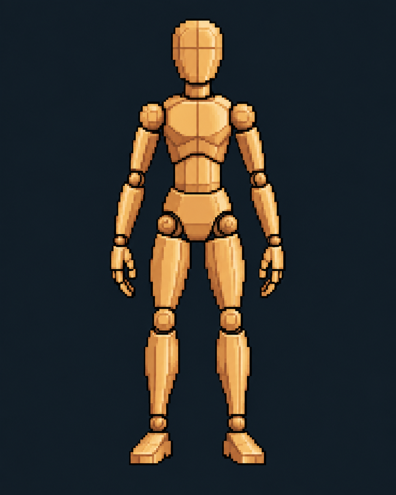

LABORATORIO DE APRENDIZAJE // V. 2.1.1
CONOCE EL CUERPO.
DIBUJA EN PÍXELES.
Explora la anatomía muscular, comprende el volumen y transforma las formas del cuerpo humano en personajes para ilustración y videojuegos 2D.
FIG. 001 / MANIQUÍ DE DIBUJO

ESTUDIO DE VOLUMEN // PIXEL ARTSELECCIONA TU RUTA
ÁREAS DE ENTRENAMIENTO
MÓDULO 01 // EXPLORACIÓN GUIADA
ATLAS MUSCULAR INTERACTIVO
Estudio anatómico vectorial: cambia el modelo, la perspectiva y la capa muscular dentro de una sola mesa de trabajo.
CARGANDO REFERENCIA PIXEL...
Nota educativa: figuras esquemáticas para aprender dibujo; no representan todas las inserciones ni los planos profundos con precisión clínica.
CONSOLA DE APRENDIZAJE
BIENVENIDO, ARTISTA
Selecciona un módulo para comenzar. Aprende a observar la anatomía, simplificar sus formas y construir personajes con píxeles claros y deliberados.